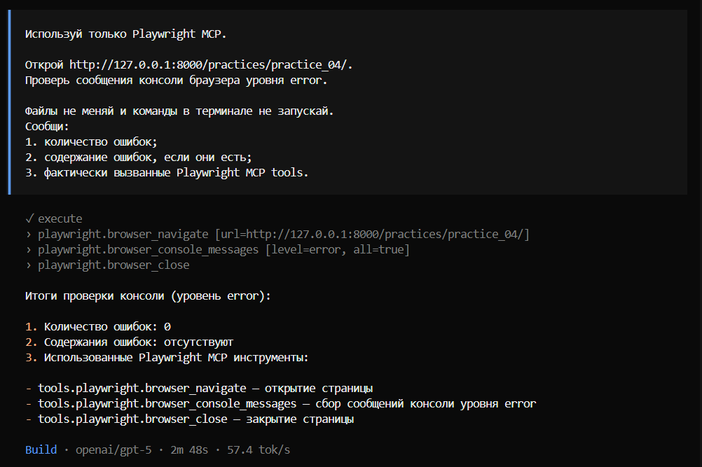
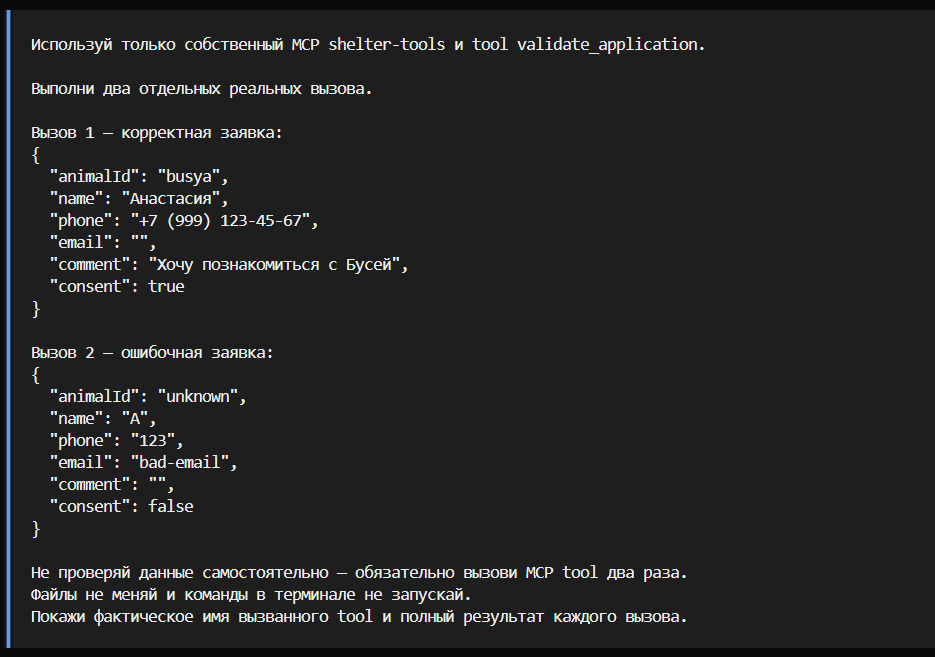
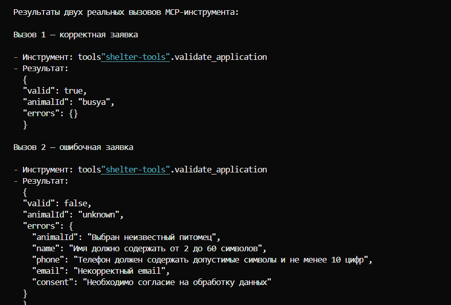

Правила
OpenCode читал технические ограничения до реализации. Новая сессия восстановила контекст по AGENTS и HANDOFF.
Практика 4
Лендинг приюта «Лапа помощи»: правила проекта, frontend-design skill, MCP, автоматическая проверка, worktree и отдельное review.
Критерий 1
OpenCode читал технические ограничения до реализации. Новая сессия восстановила контекст по AGENTS и HANDOFF.
Runner запускает статическую проверку, hook возвращает результат агенту после изменения файла.
Playwright MCP выполнил реальный браузерный сценарий: переход на страницу, фильтрацию каталога, выбор питомца и проверку консоли.
Критерий 2
Skill выбран для проектирования выразительного интерфейса без шаблонного вида. При работе над Feature 1 агент использовал его рекомендации для системы цветовых токенов, типографики, сетки и состояний элементов.
Критерий 3
Инструмент выбран для проверки пользовательского сценария в настоящем браузере. Вызваны browser_navigate, browser_resize, browser_evaluate, browser_click, browser_console_messages и browser_close.
Подтверждено: на старте видны 6 карточек, фильтр «Кошки» оставляет 3 карточки, кнопка «Познакомиться» подставляет Бусю в форму. После подключения локального favicon повторная проверка показала 0 сообщений консоли уровня error.
Локальный stdio-сервер shelter-tools реализован на официальном MCP SDK. Tool validate_application проверяет данные заявки по требованиям Feature 2.
Успешный вызов с заявкой на Бусю вернул valid: true. Ошибочный вызов вернул valid: false и сообщения по полям animalId, name, phone, email и consent.



valid: true и valid: false с ошибками по полям.Автоматическая проверка
script.js.FAIL.PASS.Результат разработки
Каталог из шести животных, фильтры по виду и передача выбранного питомца в форму.
ebb74c5
Доступная форма заявки, клиентская валидация, успешная отправка без сети.
24223c7
Feature 2 сделана в отдельном worktree. Review через @explore нашло две проблемы, после исправления повторная проверка прошла без замечаний.
Новая сессия восстановила состояние проекта и самостоятельно получила PASS.
Критерий 4
В рефлексии зафиксировано, как правила помогли удержать границы проекта, почему потребовалось ручное вмешательство при настройке hook и как worktree с отдельным review помог принять Feature 2. Отдельный вывод касается MCP: статус подключения не заменяет реальный вызов и проверенный результат.